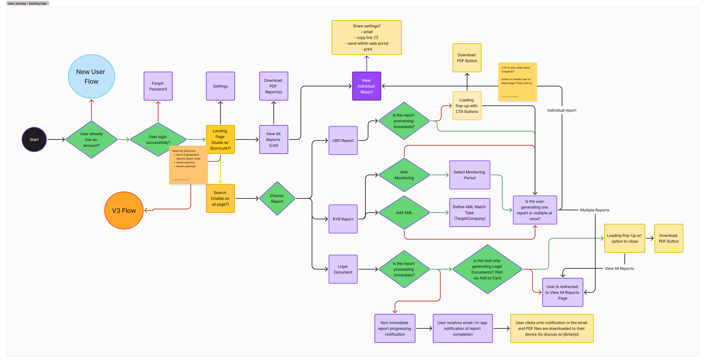
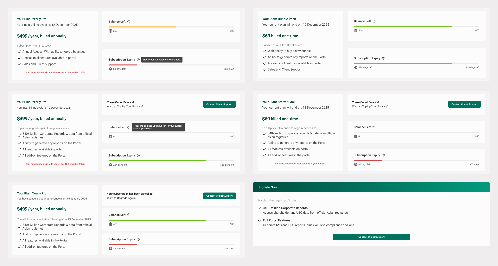
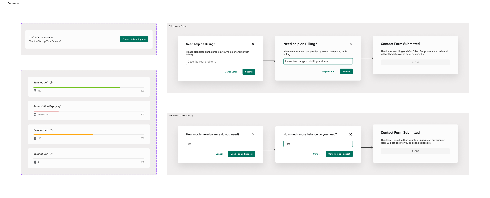

AsiaVerify streamlines business verification across Asia, providing instant, reliable, and fully translated compliance data from official government sources. With AI-powered automation, AsiaVerify eliminates the complexities of regulatory checks—helping businesses make confident, informed decisions with ease.
AsiaVerify
Team: AsiaVerify Product Delivery Team
Tools: Figma, Figjam, Confluence
Duration: 4 months
As Lead Product Designer at AsiaVerify, I worked alongside Celine
Ong as co-lead designers, together owning the product end-to-end—
research, wireframes, final UI, prototyping, design system, and
final Figma deliverables. We built AsiaVerify's original design
system together, keeping the product consistent and scalable as new
features shipped.
Working closely with engineers, we turned dense compliance
information into interfaces that are simple to use and easy to
trust. Project Manager Joanne Ng reviewed our designs and kept them
aligned with the product roadmap, helping the team move fast
without losing sight of business goals.

Overview
The product team kept hearing the same question from clients: "How do we simplify the Billing and Subscription dashboard?" So we focused on presenting AsiaVerify's core strengths clearly and positioning it as a reliable platform for compliance data. Our goal was a clean, user-friendly subscription interface that surfaces every important detail without overwhelming users. Guided by user research, data insights, and design critique, we identified the core challenges affecting users and designed solutions to address them.
Background & Challenges
The legacy dashboard failed to clearly convey subscription details, leaving users unsure about payment deadlines, billing cycles, and current balances. Key challenges included:
- Users struggled to quickly find key information because subscription details and usage data were displayed inconsistently across the dashboard.
- Different subscription states — active, exhausted balance, expired — weren't visually distinguished, leaving users confused about their current status and what to do next.
- Late and unclear billing alerts frustrated users after payment events, driving up support requests.
- The interface needed to adapt its content based on subscription tier (monthly or yearly) and each user's status, from active to cancelled.
Research & Discovery
UX Research
To improve the Subscription dashboard, we ran a broad user research study. After collecting direct feedback on users' experiences and pain points with the current dashboard, we organized the findings by severity to identify the most urgent issues.
User Interviews: We spoke with users about
their experience with the Subscription dashboard. They struggled to
find renewal dates, understand plan features, and interpret
messages about exhausted balances or cancellation.
Customer Support Data: We reviewed
customer support tickets to identify common billing issues. The
analysis showed recurring complaints about unexpected charges and
missed renewal notifications, pointing to key trouble spots in the
experience.
Heuristic Evaluation: A usability audit
based on Nielsen's Heuristics surfaced major issues with system
status visibility, error prevention, and overall consistency.
Key Insights
The research pointed to one clear need: an interface with live updates, simple navigation, and content tailored to each user's subscription.
Visibility of System Status: Users need a
fast, clear view of their current plan, billing cycle, and
remaining balance.
Guided Actions: Users want to top up or
upgrade their subscription quickly, without digging through multiple
pages.
Clear Hierarchy: Key subscription details
— plan cost, next billing date, subscription end date — need to be
immediately visible to avoid confusion.
Accessible Interactions: Existing contrast
levels and text sizes fell short for some users, so the redesign
needed to follow WCAG accessibility guidelines.
Active User Journey
To design a more intuitive Subscription dashboard, we mapped out the full user journey to understand each interaction point and surface potential friction. This helped us make design decisions that meet user needs and keep every billing step smooth.
Mapping the workflow
Entry Point: Once a payment is successfully
processed, users are immediately redirected to the “My Plan Dashboard”
with the Subscription History tab open by default, ensuring they are
presented with the most relevant information right away.
Primary Goal: The main objective for users
is to quickly and clearly view their current subscription status. This
includes details such as their active plan, remaining balance, and the
next billing or renewal date.
Secondary Goals: Beyond checking their
status, users often need to update payment information, review
historical billing data, or contact support for issues or
clarifications.
Pain Points & Opportunities:
- Navigation Challenges: Users have previously encountered difficulties locating key details such as renewal dates and specific plan features.
- Cluttered Presentation: Critical information was often lost in a lack of clear visual hierarchy, making it hard to digest at a glance
- Actionable Shortcuts: There is a need for streamlined processes that allow users to top-up or upgrade subscriptions without navigating through multiple pages.

Design Approach
We applied Gestalt and usability principles to create a "My Plan Dashboard" that's visually coherent and functionally efficient, adapting its content and interactions to match each user's subscription state while staying consistent and clear.
-
Adaptive Information Hierarchy: Leveraging
the principles of proximity and similarity, we grouped related
elements (such as the Subscription Plan Breakdown, Balances Usage
Tracker, and Subscription Expiry Tracker) into clearly defined
sections. This structured approach ensures that users receive a
quick snapshot of their key subscription details, with the content
dynamically adjusted to reflect their unique status—whether active,
with exhausted balances, or having cancelled their subscription.

-
Consistent Visual Structure: A consistent
design language was established across the dashboard. Uniform
typography, color coding (green for >50%, orange for 25-50%, and red
for 0-24% thresholds), and iconography create an intuitive
interface. This consistency not only reinforces the brand identity
but also enables users to easily interpret complex data—whether
they're reviewing their subscription plan or tracking usage and
expiry details.

-
Seamless Navigation and Flow: The layout
supports a logical progression of tasks. Upon successful payment,
users are redirected to the “My Plan Dashboard” with the
Subscription History tab open by default. This intentional design
choice, combined with clearly defined filters, sorting options, and
navigational elements (such as pagination and refresh buttons),
ensures that users can effortlessly move between sections like
Subscription History and Usage History, minimizing friction and
improving overall efficiency.

- Dynamic Feedback and Interactive Affordance: Real-time updates and clear visual cues are integral to the dashboard’s design. Trackers update immediately when a report is generated or a billing event occurs, providing instant feedback. Visual indicators—such as green dots for newly updated rows and tooltips on trackers—offer context-sensitive information, helping users understand their current status and available actions without delay.
-
Accessibility and Error Prevention:
Emphasis on accessible design is evident through high-contrast color
schemes, legible typography, and comprehensive tooltips. These
elements, along with error prevention strategies like intuitive
sorting options and the inclusion of a dedicated support CTA, ensure
that users of all abilities can navigate the dashboard with ease and
confidence.

Testing & Validation
Following the “Design Approach,” we conducted a thorough testing and validation process to ensure the redesigned “My Plan Dashboard” effectively meets user needs across various subscription scenarios—from active/upgraded users to those with exhausted balances or cancelled plans.
Multi-State Usability Testing
- We recruited participants with active, exhausted, and cancelled plans to evaluate how they navigated the dashboard and initiated support requests.
- Observations showed that clear visual indicators (e.g., color-coded usage bars) and straightforward navigation significantly reduced confusion.
Real-Time Validation & Accessibility
- Simulated subscription events and report generations verified that balance and expiry trackers updated instantly, minimizing the need for manual refreshes.
- A contrast audit and adherence to WCAG guidelines ensured that color-coded alerts (green, orange, red) were accessible for all users.
Iterative Refinement
- Early feedback revealed minor confusion around the placement of “Contact Support” and top-up options for users with exhausted balances.
- Rapid prototyping and continuous feedback loops allowed us to quickly address these concerns, resulting in a final design that aligned with both user expectations and business goals.

Outcomes & Impact
The redesigned “My Plan Dashboard” has yielded notable improvements for both users and the business. By consolidating critical subscription details, offering real-time updates, and tailoring the interface to each user’s subscription status, we achieved the following key outcomes:
- Enhanced User Clarity & Satisfaction
- Reduced Support Queries
- Increased Adoption & Retention
Reflection & Learnings
This project reinforced the value of a user-centered, adaptive design approach. Through iterative testing and collaboration, we learned that:
- Customization is Key: Tailoring dashboard content to reflect various subscription states—whether active, exhausted, or cancelled—ensures users receive the most relevant information, reducing confusion and enhancing overall clarity.
- Real-Time Feedback Matters: Implementing immediate updates and clear visual cues significantly reduces cognitive load and empowers users to take timely actions, thereby improving engagement and satisfaction.
- Iterative Collaboration Fuels Success: Continuous feedback loops with users, cross-functional teams, and stakeholders allowed us to quickly identify issues and refine the design. This agile process not only aligned the final product with user expectations but also supported our business goals effectively.